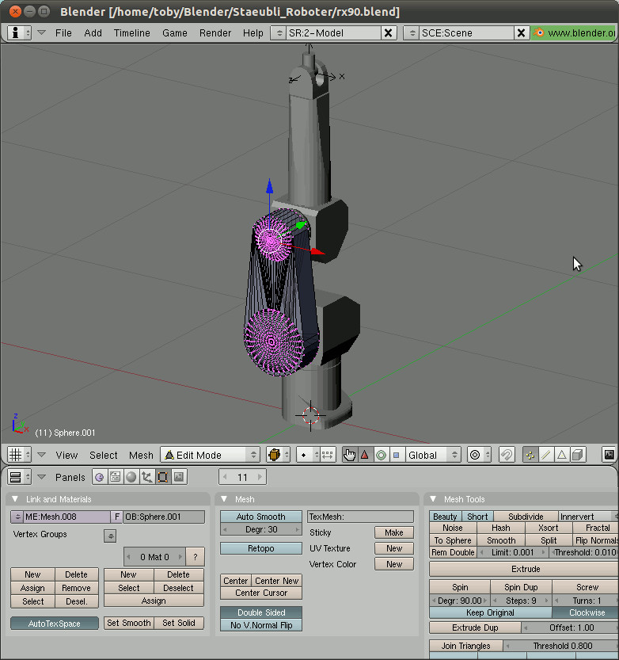

Writing machine definitions
Machines for Generic CAM are defined as small LUA programs.
LUA [C] [C] www.lua.org is a programming language developed by a team from the Pontifical Catholic University of Rio de Janeiro in Brazil.
The machine descriptions consist of two parts:
-
Description of the components of the machine.
-
The function AssembleMachine() with instructions to where all the parts belong.
To generate geometry the commands box, cylinder, loadstl and loaddxf are used.
The very first geometry generated belongs to the base of the machine. This geometry is fixed and does not move at all.
The next command is addcomponent. Geometry
definitions following this command are added to the defined component.
An abitrary number of components can be defined.
Special components are tableorigin and toolholder
these commands have to be in the machine description exactly once. They
describe where the stock material and the tool is placed. Table and
tool may move freely. In a 5-axis CNC mill for example the table
rotates around two axis and the tool moves in X, Y, and Z.
Commands
addcomponent
Starts a new component in the machine description.
identity
Usage: identity();
translate
Usage: translate(tx, ty, tz);
rotate
Usage: rotate(rx, ry, rz);
Usage: rotate(rx, ry, rz, ox, oy, oz);
box
Usage: box(h, w, d);
cylinder
Usage: cylinder(...);
loadstl
Usage: loadstl(’filename’);
loaddxf
Not yet implemented!
Usage: loaddxf(”filename”);
setstyle
Usage: setstyle(r, g, b);
toolholder
Usage: toolholder();
tableorigin
Usage: tableorigin();
placecomponent
Usage: placecomponent(”componentname”);
Modelling machines with Blender
The software blender is a free 3D modeller. It is available from www.blender.org.
